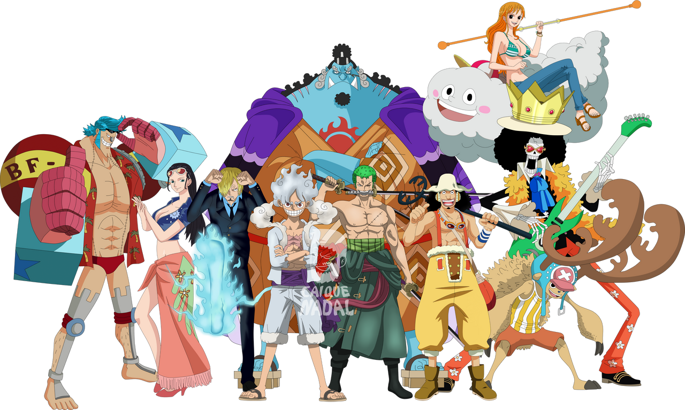

About Chopper
Tony Tony Chopper, Doctor of the Straw Hat Pirates. He is the sixth member of the crew and the fifth to join
Chopper's Characteritic
- Naïve : Chopper is extremely naive.
- Gullible: He tends to believe almost anything told to him, even if it's outrageously fictitious or exaggerated.
- Emotionally Expressive: He is incapable of hiding his feelings and emotions.
- Love for Compliments: Chopper loves to receive compliments.
The Strawhat Pirates
